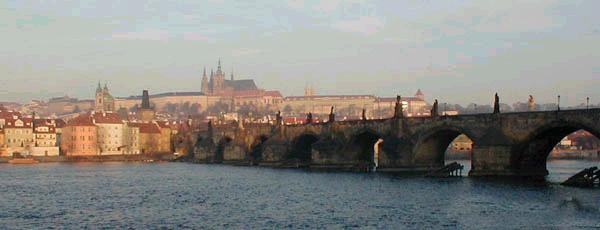
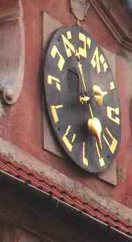

Listen to "Prague" in English

II PRAGUE
Le gardien de mes ans veille sur le Hradchin
Jusqu'à la fin des temps, à la chute des ailes.
Ni le beffroi qui bat, ni l'aigle qui s'étoile
Ne sauront le tirer du songe qui le tient.
Sur le pont ont passé les amants et les sages.
Un même philtre unit ces esprits oublieux
Car vivre d'un savoir ou vivre d'un visage
Est leurre pour qui cherche en son âme les dieux.
Près du Christ étoilé fleurit votre sourire
Le fleuve était de brume et brume le manoir.
Nous savions qu'emportait nos rêves, notre empire,
Le fleuve en nous celé que nous ne voulions voir.
Si le prince dément pour braver la fortune
Voulut graver son chiffre au fronton des discours,
Notre histoire à conter n'eut pas été commune.
Les dits de l'échanson auront été bien courts.
(Un fleuve étincelait qui n'était qu'une histoire.
Sur le plus haut des monts sonnaient des hallalis.
Prague, tes toits sont d'or, si tes caves sont noires.
La cité de légende a rongé tes taudis.)
Nous avons cheminé où croupirent les larves.
Sur les dalles le pin chantait l'éternité,
Mais âpre était le vent, et les visages graves.
Les hantises des morts ne nous ont pas hantés.
L'horloge qui montrait à reculons les heures
Nous disait que l'amour est éternel retour-
En vain - car ses conseils furent pour nous le leurre
Et de nuit votre front se mura sans retour.
L'église était profonde -ainsi votre silence-
Où des saints cancaniers, des amours polissons,
Arrondissaient la cuisse et narguaient la décence
Semblaient avoir appris de Patti les leçons.
Et lorsque l'oiseau clair nous tira de la ville,
Dans le fond, écroulés, de fauteuils tentateurs
Deux spectres dédaigneux, deux étrangers hostiles,
Brisaient entre leurs doigts les poupées du bonheur.
Michel Galiana (c) 1991
II PRAGUE
O Warden of my years, watch over Hradcany,
Till the end of the times, till the fall of the wings!
No star-circled Eagle and no steeple that rings
Will ever waken you from your long reverie.
Many who crossed the bridge were lovers or sages.
The same philtre has poured on these minds oblivion:
For devoting their lifes to love or science is
To them who seek gods in their souls a delusion.
Near the Christ in a star-shaped halo flashed your smile.
The river was misty and mist was the manor.
Well I knew that my realm of dreams was swept aside
By a stream hid in me, I scorned to consider.
If the lunatic prince tried to defy Fortune
By carving his cipher on a panel of speech,
His story did not grow to be a shared one,
And the Cupbearer's tale was doomed to be quite brief.
(The sparkling river swept along historic tale.
Hunting horns resounded from afar on the height.
Prague, your roofs are of gold, but your basements smell stale.
The City of legends has gnawed its slums away.)
Then we roved in a yard where dim phantoms wallow:
Pines rustled endlessly over the stone ledgers,
And bitter was the wind and sombre was her brow.
Yet the fear of dead souls haunted neither of us.
The clock that went backwards when measuring the hour
Was suggesting that love returns eternally!
In vain - and this advice for me was but a lure...
And your brow in shadows closed with obstinacy.
Deep was the quiet church - and deep was your silence-
Where tittle-tattling saints chatted with pert Amours.
Their rounded thighs were to decency a challenge;
They seemed Patti's lesson to recite, their teacher's.
When the bird of metal at last did leave the town,
Slumped in armchairs that were temptingly numberless,
Two strangers full of scorn were still exchanging frowns,
And broke with their fingers the dolls of happiness.
Transl. Christian Souchon 01.01.2004 (c) (r) All rights reserved
|
-Michel était passionné de voyages et un excellent client pour les voyagistes. Il semble que ces voyages lui permettaient de faire la connaissance de jolies touristes qui étaient rapidement effarouchées par son étrange personalité. -"gardien de mes ans": Saint Guy (qu'on invoque pour les maladies nerveuses) -"l'aigle qui s'étoile", "Christ étoilé" se rapportent aux statues d'évangélistes et de saint qui ornent le Pont Charles. L'Aigle est Saint Jean, auteur de l'Apocalypse. -"Les dits de l'échansson" évoquent le long poème du 19ième siècle finissant, Jules Barbey d'Aurevilly, intitulé "l'Echanson": Quand deux amants boivent à la coupe de l'amour, un échanson qui se tient derrière eux y verse un poison qui a noms "habitude", "accoutumance", "temps qui passe" et qui détruit cet amour... La phrase alambiquée -"pour braver la Fortune" et "frontons des dicours" could pourrait signifier que le poête fut assez hardi pour adresser la parole à une femme qu'il avait vue dans l'avion mais à laquelle il n'avait pas été présenté. -"dalles", "larves, "horloge allant à reculons" se rapportent au fameux cimetière juif de Prague. Tout près se trouve une horloge n'ayant qu'une aiguille tournant de droite à gauche, le sens de lecture de l'hébreux. -Adela Juana Maria PATTI était une fameuse cantatrice italienne (1843-1919): les statues baroques affectionnent les pauses théatrales qui les font ressembler à des acteurs d'opéra. -"l'oiseau clair"= avion |
 |
-Michel was a passionate traveller and a excellent customer for tour operators. Apparently these trips allowed him to make the acquaintance of pretty tourists who were rapidly disconcerted by his strange personality. -"warden of my years": Saint Vitus (who is in charge of nervous illnesses) -"star circled eagle", "star shaped halo" refers to the statues of evangelists and saints on Charles Bridge. The Eagle is Saint John who wrote the Apocalypse. -"cupbearer" refers to a long poem of an author from the finishing 19th century, Jules Barbey d'Aurevilly, titled "l'Echanson": whenever two lovers drink out of the goblet of love, a cupbearer who stands behind them pours in a poison that is called habituation, routine, time, so that at last love dies... The intricated sentence about "defied Fortune" and "frontispiece of speech" could mean that the poet was reckless enough to address a girl he had seen in the plane but had not been introduced to! -"ledgers", "phantoms, "clock turning backwards" refer to a famous Jewish Cemetery in Prague. Nearby there is a one-handed clock turning from the right to the left, which is the way of reading Hebrew. -Adela Juana Maria PATTI was a famous Italian Opera singer (1843-1919): the baroque statues always strike theatrical poses like opera actors. -"bird of metal"= airplane |
Listen to "Prague" in English